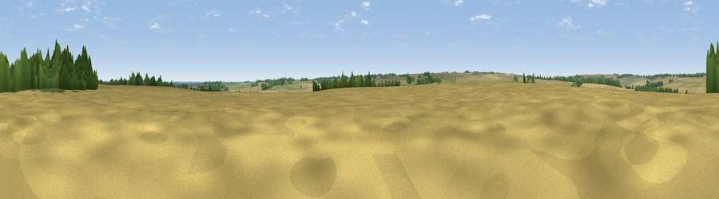

Viewpoint near Wilsford
#44186 in England · top 78% of its area beats it · near Wilsford · path 170 mWhere it is
The exact computed spot (TF 00976 43775). Click the marker for map links.
Public access: the nearest public right of way is about 170 m away — the final stretch may cross private land. Computed from Natural England's CRoW access layer and OpenStreetMap rights of way — not the legal definitive map. Always verify locally.
The view, rendered

A 360° render of this exact spot computed from the terrain model, tree cover and land cover — summer colours, afternoon light, calibrated against photographs of famous viewpoints. Real trees, hedges and buildings will differ in detail.
The panorama
Grey silhouette: terrain skyline in each direction (720 bearings, Earth curvature and refraction included). Dashed green: skyline with trees (+15 m) and buildings (+8 m) as obstacles. Blue strip: how far the ground is visible on each bearing.
Where the view opens
Wedge length = distance to the farthest visible ground on that bearing (vegetation-aware). Rings at 10, 25 and 50 km.
What fills the view
78% cropland · 13% grassland · 8% woodland ·
Angular shares of the visible panorama (visual magnitude), not map area. Landscape diversity 0.31 (0–1 Shannon).
Key numbers
More beautiful places nearby
The staircase of upgrades: each row has a higher view potential than everything closer. Driving times are estimates from straight-line distance, calibrated against real road routing — check an actual route before setting out.
| Place | Direction | Drive | Score |
|---|---|---|---|
| North Hill | SSE · 2 km | ~6 min | 19.9 |
| Viewpoint near North Rauceby | N · 2 km | ~6 min | 21.5 |
| Viewpoint near Aisby | SSE · 5 km | ~12 min | 35.6 |
| Normanton Hill | WNW · 6 km | ~12 min | 49.8 |
| Summerfield's Hill | W · 9 km | ~18 min | 51.5 |
| Viewpoint near Great Gonerby | WSW · 11 km | ~21 min | 52.5 |
| Viewpoint near Great Gonerby | WSW · 12 km | ~22 min | 62.0 |
| Viewpoint near Belvoir | WSW · 21 km | ~36 min | 70.8 |
52.98181, -0.49745 · source: osm peak · position refined by local search. Computed location — check access rights before visiting.